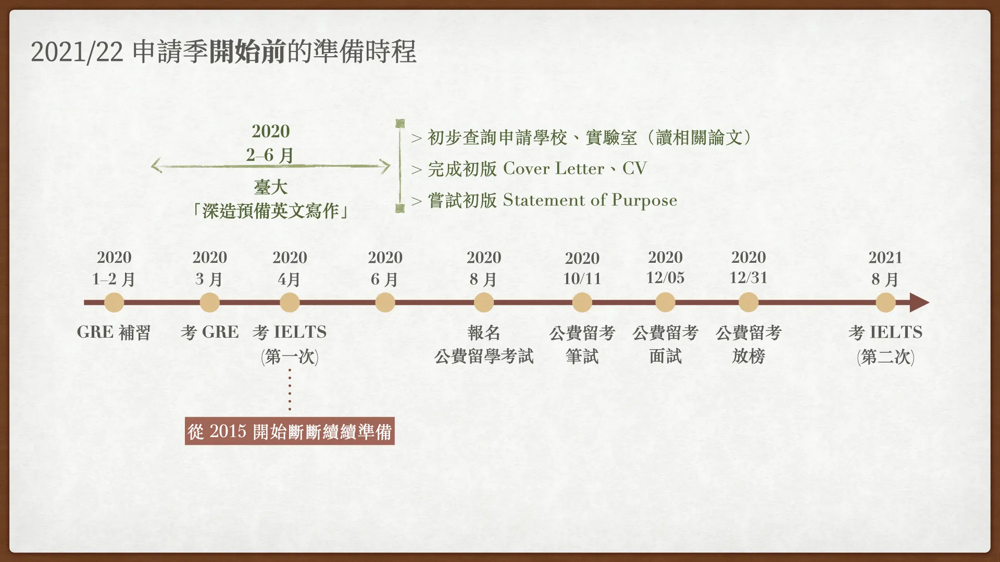
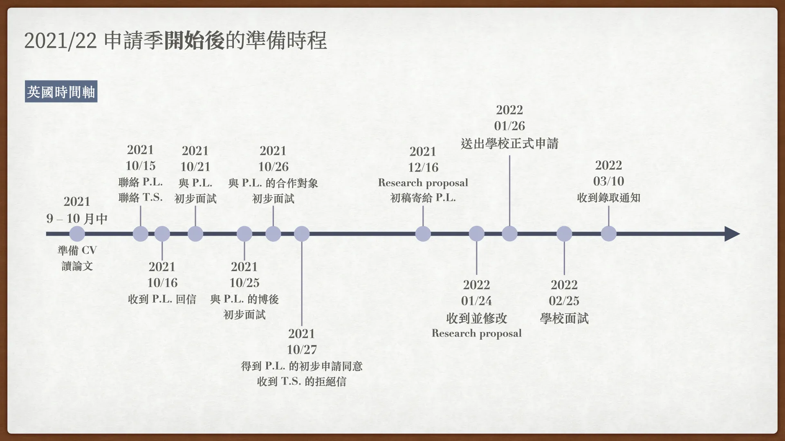
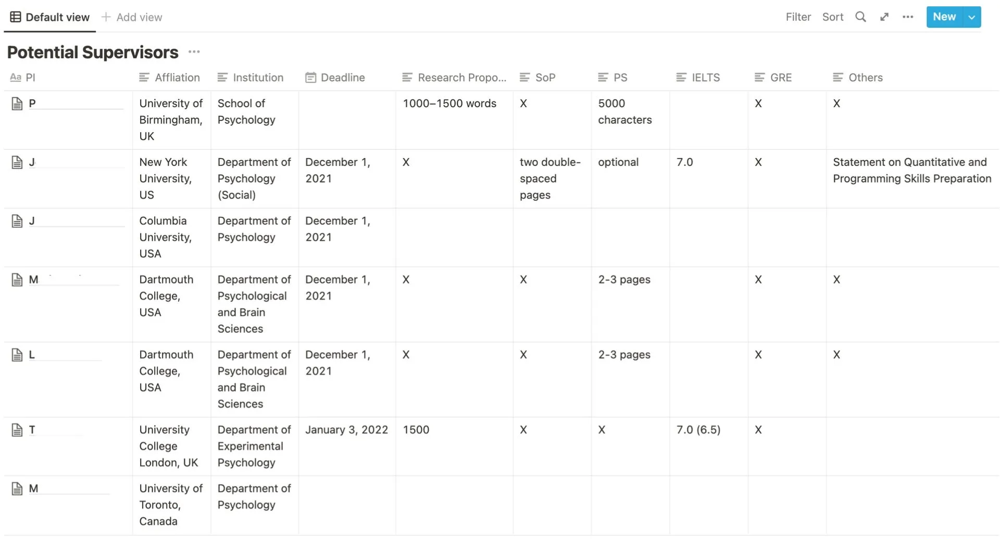

![]()

開始閱讀本文之前，希望您能夠意識到，這是我的申請經驗。
我所在乎、考量的事情，或許並非您所關心的。
我無意指出一條讓其他人跟隨的道路，而是分享我沿途看到的風景，希望您在選擇要踏上的旅程之前，可以參考看看。
本文閱讀簡介
我是一個囉哩八唆的人。這篇文章沒有意外的話，會是一篇非常長的文章。
如果您有耐心閱讀我的整個申請經歷，我會非常感謝您。
但我也完全理解大家的時間很寶貴，如果您想跳過一些比較單純心情抒發的部分，您可以直接跳到「申請過程」的部分開始閱讀。
如果您單純想找到一些比較工具性的撰寫建議，您可以在文章中找到這些方框，這裡會有實用的參考資源。
左側的目錄可以幫助您快速瀏覽與定位。
申請結果摘要
Application
PhD in Psychology, University of Birmingham, UK (formal application)
PhD in Experimental Psychology, University College London (UCL), UK (supervision enquiry)
PhD in Social Psychology, New York University (NYU), US (formal application)
PhD in Psychology, Columbia University, US (formal application)
Rejection
PhD in Experimental Psychology, UCL (informal rejection)
PhD in Social Psychology, NYU (formal rejection)
PhD in Psychology, Columbia University (formal rejection)
Admission and decision
- PhD in Psychology, University of Birmingham, UK
Funding
- 教育部公費留學考試獎學金（四年）：心理與認知學群–認知神經科學
序言
2022/03/10 我收到了 2021/22 博士班申請季第一封，也是唯一一封的無條件錄取通知。
思緒回到 2021/06，臺灣正值新冠肺炎三級警戒期間，我幾乎失去平常所有的休閒與社交活動（無法去實驗室、無法去練體操、無法去打排球、無法跟朋友見面），整日待在景美小到不行、沒有對外窗的出租套房內，過著起床走一步到書桌上班、三餐 Uber Eats、下班一步到床上躺著的日子。 這也是我開始實際著手準備隔年秋季博士班入學申請作業的時候。不確定是因為疫情造成生活節奏大亂的影響，抑或是博班申請本就是一件壓力極大的事情，在刷過幾則 PTT 上為數不多心理學博班申請心得分享後，我好幾個夜晚都輾轉反側，腦袋中的想法都是自己的經歷有多麽不足、申請上理想學校的機會有多麽渺茫（我甚至會去查統計數據支持自己的想法），直到天色微亮才能勉強入睡。
我想要撰寫本文主要有兩個目的：
相較於自然科學或工程領域，心理學博班申請心得分享的文章數量相當少（申請英國博士班的又更少）。 我很幸運處在一個資源豐沛又支持的環境當中，我有機會第一手認識與詢問曾經走過這一遭的人們，但或許不是每個人都有這樣的好運。 我希望將自己的經歷寫下來，並將我在這一路上搜尋到的資源做一個統整，讓之後相關領域的申請者有更多參考案例。
學術界很少談論失敗，或者退一步說，比較沒那麼成功的經驗。 申請博班過程中的負面情緒有時難以忍受，對自己的質疑會層層堆疊，對未來不確性的焦慮可能會將自己吞沒。 但我們都不是孤單的，很多人在這個過程中都曾經歷過這些，但不見得會記住，也不見得會被看見。 但是當這些經驗被談論與分享，或許能夠降低我們對於這些糟糕經驗，做出不合宜的自我歸因，並且能夠幫助我們體認到這就是過程中難以避免的環節（Jaremka et al., 2020, Perspect. Psychol. Sci.）。 在這些徬徨無助的時候，我們都不是孤單的。
客觀經歷摘要
我盡量做到完整的資訊揭露，供其他人做參考。
Background
2020/09 - Present RA in Psychology, NTU
2018/08 - 2020/08 MSc in Brain and Mind Sciences, NTU (GPA: 4.21/4.30, Ranking: 2/17)
2015/09 - 2018/06 BSc in Psychology, National Taiwan University (NTU) (GPA: 4.20/4.30, Ranking: 2/63)
Test scores
IELTS 8.0 (L9.0, R8.5, W7.0, S7.5)
GRE (V157, Q170, AWA4.0) ––– 本次申請過程中完全沒有使用到。
Awards
教育部公費留學獎學金
臺大傑出教學助理獎（英文寫作基礎）
臺大書卷獎 ⨉ 4
臺大理學院推廣國際交流（國際會議）獎學金
朱敬一院士、陳添枝教授經濟學系勵學獎學金
Academic experience
3 ⨉ Conference Posters (1 international / 1 international online / 1 local online)
NO Journal Paper
Teaching experience
- 2 ⨉ TA (AWEC at NTU)
Letter of recommendations
NTU GIBMS 碩士班指導教授（副教授）
NTU PSY 研究助理老闆（系主任/教授）
NTUE EDU 研究助理老闆（助理教授）
申請時程一覽表
2021/22 申請季指 2021/09/01 到隔年 2022 秋季入學之前。
時間軸之間的距離不反映真實比例，僅為示意用。


申請過程（經驗、建議與資源）
會以申請英國博士班的過程為主軸，輔以北美博士班申請過程作比較。
英國博士班的主線任務：
聯絡指導教授 ➜ 初步面試 ➜ 準備研究計畫 ➜ 正式向學校出申請 ➜ 正式面試 ➜ 申請結果。
支線任務：想辦法申請到獎學金。
Q1 | 選擇申請哪裡？
沒有意外的話，讀博士班是至少花費 3–7 年、成本很高的一筆投資（還不確定嗎？）。 選擇自己生活起來最舒適、最能發揮自己學術潛力、最符合自己學術興趣與職涯發展的地方是最重要的—簡單來說，就是與自己適配度（fit）最高的地方。我覺得可以至少從三個層面來思考要申請的學校：地區、學校、指導教授。
地區
英國/歐陸與北美的博士班運作邏輯非常不一樣。
英國/歐陸博士班訓練方式類似「師徒制」，除了少數 Integrated PhD 外，沒有必修課程（所以通常會希望申請者有碩士學位）或典型的資格考制度1，一進去博班就開始為自己的博士論文犧牲奉獻。 如果認為自己有需要加強的學理基礎，可以自己跟指導教授討論去修習或旁聽學、碩班的課程，學術訓練上相對比較有量身定做、彈性的感覺。 但因為缺少明確的 milestones，如果學生沒有足夠動機自我推動研究進展，滿容易博士班四年讀不完而被迫退學。
1 關於資格考：在英國常見的做法是，博士班學生會先註冊成為 MPhil 或 PRS (Probationer Research Student) 學生，大約在一年半或第四個學期後，會有升等（upgrade）考核。 在這個升等考核中，系上會召集專案小組（panel）考核學生至目前的研究進度是否有資格成為 PhD 學生。 這個升等考核相當於北美的資格考（qualification），假如通過了就會成為美國所謂的博士候選人 （PhD Candidate），只是這邊的人通常不會這樣稱呼。 但是，實際的作法仍因學校而異。
北美博士班訓練比較有明確的通盤規劃，通常會有一到兩年的必/選修課程，接著通過資格考，最後才是撰寫博士論文的階段，學生會有明確的 milestones 要一步步達成。 訓練宗旨感覺比較接近「先廣博而後專精」，會希望學生在學術初期能夠廣泛接觸各個不同的研究次領域。 相對地，基於這樣的課程設計，北美博士班的訓練過程通常會比較長（5–7 年）。
學校
除了大家通常都會考量到的學校排名、學校聲望、研究專長、研究設施（像是我要做 fMRI 研究，總不好去選一間沒有 MRI 的學校）之外，其實學校所在地的非學術因素也很重要：
氣候、所在地（五光十色的大城市 vs 杳無人煙的小城鎮）
周邊實習機會（尤其是如果之後打算進業界）
個人偏好與憧憬（像我自己就非常想去 Oxford 讀書）等
每個人都有適合的生活與研究環境，這些通常不是考量學校時會直接想到的事情，但會是影響博班留學體驗很重要的因素。 畢竟要獨自在一個地方生活這麼多年，如果環境令人難以忍受，博班生活會很難熬過去。
指導教授
選擇指導教授（supervisor/advisor），通常會跟選學校綁在一起考量。 我個人（受到很多人影響與說服後）覺得選擇指導教授，是這三個層面中最重要的。 如何挑選指導教授，每個人都有自己的標準，以下分享我當初考量的一些因素。
與指導教授的研究興趣契合度（議題、方法學）。
指導教授的研究、發表近況。
指導教授所在的學術階段2。
「正教授」通常實驗室規模會比較大、學術資源豐沛、可能又剛好會是領域內的大佬，比較容易發論文，但同時他們通常都會有超級多的外務，實際指導你的時間可能會很少，甚至有可能準備要退休了，學術動能會開始下降。
「助理教授」的情況剛好相反，實驗室規模較小、資源較少、名聲可能還沒建立起來，但為了要留在學術圈（
但也有可能留不住），他們通常動機高昂，學術動能很大，會跟學生有比較密切地互動往來。「副教授」的情況介於上述兩者之間。
2 英國學術職位的稱呼與北美、臺灣體系不同：Lecturer 對應的是助理教授、Senior Lecturer/Reader 對應的是副教授，這些老師都是可以負責指導博士生的。 不要誤會成專門負責教學的講師。
指導教授本人的個性、指導風格。
- 這件事情我覺得非常關鍵，但很難判斷。 在疫情之前常見的做法，是利用學術研討會期間進行面對面的交流，可以從中感受一下。 如果自己學、碩班期間的指導教授剛好認識，可以順便打聽一下；再來就是寫信聯絡該實驗室的博士生、博後詢問看看，通常他們都滿願意分享自身經驗的。 最後，通常在申請學校之前，會先寫信聯絡幾位可能的指導教授（potential supervisor/advisor），可以利用書信往返、私下面試的機會，感受一下其個性或做事風格，雖然很間接，但總是個機會。
指導教授是否會讓學生掛在第一作者、是否會和學生共同有發表。
這位指導教授所在的單位，是否至少有第二位老師的研究我有興趣。
- 我覺得這個考量很有意思。其實我們都不確定在讀博班期間，會跟指導教授發生什麼事情，如果不幸沒辦法繼續維持原先的指導關係（雙方不合、老師離開原單位等各種原因），至少還有機會可以轉到別的實驗室繼續讀下去。
分享一些選擇指導教授的文章給大家做參考，尤其推薦第二篇：
Choosing a PhD Supervisor (FindAPhD blog)
How to Pick a Graduate Advisor (Barres, 2013, Neuron)
最美好的情況當然是，理想的地區、學校、指導教授完美地重疊在一起，而且自己剛好又很有能力可以申請上這所學校。 但事情若不如人願，我個人的看法，以及最後的選擇是：以指導教授/實驗室為主。 對於讀博班來說，最重要的還是培養自己成為一個獨立的研究人員，在這個訓練過程中影響最大的，我認為會是自己最緊密接觸、合作的實驗室與指導教授。
當然，這是我目前的看法，我還沒開始歷經這個過程，我不知道這個想法是否合適，如果之後有機會，我會再來更新這個部分。
Q2 | 要申請多少間？
以我身邊小樣本的詢問結果，平均落在 5–10 間左右，但也有比較極端的例子，少到只有申請一間（而且還申請上了）、多到申請接近 20 間的都有。 我自己申請學校的數量偏少（正式申請的只有三間學校，美國的那兩間學校還是同一位教授）。 主要是因為我自己的研究興趣（social neuroscience）以及想學的方法（computational model-based fMRI）算明確，我又給自己兩年的時間當作申請博士班的停損點，因此今年度的申請就只聚焦在自己真的非常想去的地方。 申請多一點學校，聽起來是讓錄取的機會多了些，但同時也要考量到申請成本（尤其北美申請費）其實不低，要準備多所學校的申請文件也非常勞心耗神，若一味追求多投幾間學校，但無暇顧及申請文件的品質，我認為只是徒然浪費金錢與時間。 尤其要注意，英國博士班的申請都要附上一份完整的研究計畫（research proposal），非常需要根據不同實驗室量身打造內容，基本上不同實驗室都要重寫，不太可能一稿多投。
我自己在初步找學校、實驗室時，是利用 Notion 表格來整理資料，將每個學校要求的申請文件、考試分數、截止期限等都整理起來，並將每間學校對於申請文件的格式要求跟網頁連結都存在相對應的分頁內，以便日後查閱。

Q3 | 如何取得英國博士班的經費（funding）？
我的碩班指導教授曾告訴我，申請（英國）博士班需要兩個東西：錢、paper（但我目前沒有成功發出 paper）。 英國博士班通常不帶獎學金，對學生而言，這大概是跟北美博士班最大的差別之一。 在英國，博班申請跟獎學金申請通常是分開的，它可以給你 offer，但不給你錢，而且常常發生（即便在 Oxbridge 仍是如此）。
以下我列出幾個臺灣學生有資格申請的英國博士班獎學金來源（這邊只列出額度足夠的獎學金）：
-
- 選校自由度最高，學費通常可以完全核銷掉（心理學上限四年 $120,000），外加根據就學城市給予的生活費（$23,000 or $21,000 per annum）。 目前有十五年內的返國義務規定，與多數高額獎學金相衝突。
教育部與世界百大合作設置獎學金（牛津、劍橋限定）
- 全額學費＋英國政府規定的博士班學生津貼（每年根據通膨調漲，比教育部公費獎學金生活費高）。 沒有返國義務。 牛津獎學金有非強制性的一些規定（無意圖於完成修業後於英國從事其因本獎學金所獲取技能之工作），劍橋的沒有。
UKRI (UK Research and Innovation) 提供的博士班獎學金
各個學校內提供國際生可以申請的獎學金（e.g., Gates Cambridge, Oxford Clarendon, UCL 的 RES）
- 每個學校額度不同，有些會提供全額國際生獎學金、有些提供本地生與國際生之間的差額。通常競爭激烈。 要去每間學校的 funding database 查詢。
相較於北美博士班以入學委員會共同挑選申請者的方式，英國的指導教授通常比較有權力與自由選擇自己的博班學生（當然學校還是有權力可以否決）。 當申請者符合學校入學要求、研究興趣相符、且有確定的資金來源（通常不包含 self-funding 這個選項），被錄取的機會就會提高不少
關於英國與北美博士班申請的差異，可以參考這篇文章：Americans Applying to UK PhDs: A Guide。
Q4 | 如何聯絡指導教授？如何準備 Cover Letter 與 CV？
除非讀的 programme 本身有第一年 rotation 的制度，否則英國通常在申請時就要決定好主要指導教授（primary/lead supervisor），所以在向學校提出正式申請之前，要先寫信跟 potential supervisors 聯絡。 學校網站上通常也都會要求要做這件事情。
同一間學校最好一次先寫信給一位老師就好（老師們彼此之間的訊息通常都很流通，同時聯絡同校多位老師，可能會造成一些負面觀感）。 另外，在尋覓指導教授的初期，可以先寫信確定自己有興趣的老師們今年有意願收學生、至少研究興趣大致相符，再來考慮 Q1 所提到的那些選指導教授的因素（i.e., 至少確定別人沒有完全不要你，再來考慮選別人）。 像是我在申請 UCL 時，就是在聯繫老師時就被拒絕了。
聯繫指導教授時須要撰寫一封 Cover Letter，詢問其今年是否有收學生的意願，確認彼此之間的研究興趣是否相符等，可能的資金來源等，通常會隨信附上自己的 CV。 心理學領域因為是加入一個研究團隊，博班做的題目通常會基於團隊目前的研究脈絡，我自己是不建議在最初的 Cover Letter 就先附上自己先寫好的研究計畫，會顯得有些突兀，而且可能寫的研究方向會非常不合適。
以下是我 Cover Letter 的架構（總長約 300 字）：
信件標題：Enquiry about PhD position at LAB NAME/SCHOOL NAME for 2022/2023 (NAME)
第一段：簡單的自我介紹＋說明自己想申請該間學校的博士班，詢問老師今年是否有打算收學生（註明自己是國際生）。
第二段：簡述碩士班研究經驗（因為這與我要申請的實驗室研究方向最接近）。
第三段：簡述自己的研究興趣與未來的研究方向（我在這裡會引用幾篇該老師的近期研究論文）。
- 我在聯絡指導教授前，會詳讀其至少三年內的 research 與 review papers 至少各兩三篇。
第四段：結尾，感謝老師撥冗閱讀，說明自己目前的 funding 情形，附上 CV。
這是我當時附上的 CV，供大家做參考（我有隱蔽部分資訊）：霖霖的 CV。
申請博士班撰寫的 CV 應該多著墨於研究經驗的部分，如果跟未來研究無關的內容（像是與研究主題關聯不大的課外活動）就不要放。 Cover Letter 與 CV 寄出去之前，最好都請別人幫忙校稿一下，畢竟這會是 potential supervisors 對你的第一印象。
我當初最早的 Cover Letter 架構與 CV 初稿都是在臺大江介維老師開設的「深造預備英文寫作」課程中完成的。 如果是臺大的同學，有機會非常建議去修這門課！（2024/10 更新 – 江老師已經離開臺大，但大家可以追蹤其 Dictionary Man 字典人臉書粉絲專頁，不定期會有相關課程）
這裡附上一些我當時撰寫所參考的資源，特別推薦看 Cantab English 的那兩篇：
Contacting Potential PhD Supervisors (FindAPhD blog)
如何寫專業有禮貌的詢問信給欲申請學校的教授（Cantab English）
英文CV寫作注意事項（Cantab English）
英文履歷寫作專欄（Evon’s Writing Recipe）
我自己最後寄出 CV 之前，有利用 Evon’s 的 CV 編修服務，大家可以斟酌看看。
Q5 | 如何準備研究計畫（research proposal）？
Research proposal（RP）是英國博士班申請中最重要的文件，從中可以展現申請者的研究興趣、研究議題的思考脈絡，以及學術英文寫作能力。
每間學校對於 RP 的規範差異非常大，字數限制、內容要求、格式都可能有很大的不同。 學校通常都會有專門的頁面說明如何撰寫 RP，在下筆之前一定要先看清楚，會很大程度影響如何呈現 RP。 若是網站上的說明真的很不清楚，建議可以寫信給 potential supervisors 或 Admission Officers 詢問。
通常在 potential supervisors 確認有意願指導你時，就會跟你簡單討論可能的研究大方向。 我認為在 RP 當中要呈現的重點在於，架構此研究議題的邏輯與學術重要性，而非進行研究的具體細節。研究議題要有足夠的原創性與影響力，但又不能太有野心而顯得不可行（時程安排上要在三到四年內能夠完成）。 事實上，我當初在跟 Birmingham 的指導教授聯繫時，她就再三強調 RP 內寫的研究議題，跟我實際到時候做的研究題目可能會有很大的落差（至少在心理學領域內如此）。 在前面有提到的美國人申請 Oxford 博士班的文章中，該作者也有提到：
This just goes to show how little correspondence there can be between what you say in the proposal and what you actually go on to do.
因此，RP 的目的不在於擬定一個很完美、詳細的計畫表，而更像是展現申請者學術能力的一個媒介。 RP 至少要說服 potential supervisors 與入學委員會兩件事情：
申請者知道在該領域中好的研究長什麼樣子，以及什麼研究議題是重要的、值得投入的，而且有機會在三到四年中做到一個令人滿意的程度。
申請者具備能力有機會完成這項計畫。
我算是很幸運，在準備 RP 的過程中，有得到 potential supervisors 提供的架構模板、學長過去申請的範例可以作參考。我的 RP 架構大致如下，總長度大約 1200 字（不包含參考文獻）：
Overview（三段）：簡介研究領域、提出研究問題、研究問題的重要性、簡要的文獻回顧。
Research Aims（一段）: 將研究問題明確寫下來，以及涉及的子問題。
Research Plans（三段）：我將研究問題拆成三個階段，每個階段都會包含研究目的、研究方法。
Concluding Remarks（一段）：總結研究問題的重要性跟預期結果，以及說明為什麼我聯繫的 potential supervisors 是最適合指導此計畫的對象。
References：如果學校沒有特別規定，我就是用 APA 格式。
很多人在 Research Plans 的部分會附上 Gantt chart，我自己是沒有這麼做，但的確是可以讓時間軸度上的安排更簡明易懂，大家可以自己斟酌。
這裡同樣附上一些資源讓大家參考：
How to Write a Research Proposal for Your PhD (FindAPhD blog)
How to write a successful research proposal (PROSPECTS blog)
Americans Applying to UK PhDs: A Guide
Research Proposal 那個 section。
Q6 | 如何聯絡推薦人？
英國博士班通常需要兩位推薦人（有些是一位、Oxford Experimental Psychology 要三位）。 有些學校還會特別要求，如果申請者有碩士學位，其中一位推薦人一定要是碩士班指導教授。
建議愈早跟可能的推薦人聯絡愈好，離截止期限之前愈早愈好，一來是給對方充裕的時間思考與準備，二來是如果不幸對方婉拒，還有時間聯絡其他推薦人。 我覺得如果可以當面詢問最好。 如果寫信聯絡，除了詢問擔任推薦人的內容外，最好也要包含自己的申請動機、認為對方適合擔任推薦人的原因，並一併附上申請文件（至少要包含 CV、成績單、SOP 初稿）供老師參考。
最後，一定要記得寫信感謝推薦人（即便被拒絕，也要感謝對方的時間）。 得知申請結果後，也要向推薦人更新自己的消息與決定。
如何聯絡推薦人，以及如何自擬推薦函初稿（如果有需要的話），可以參考以下資源：
如何請推薦人寫推薦信（Cantab English）
英文推薦函寫法 : 教授叫我自己寫 Recommendation Letter 怎麼辦？（Evon’s Writing Recipe）
代擬推薦信注意事項（Cantab English）
Q7 | 如何準備 SOP/PS？
英國很多學校的申請說明頁內都不會提到這份文件，但在填寫線上申請表格的時候會發現竟然需要它！ 在不同學校會有不同的名稱，常見的是 Statement of Purpose (SOP) 或 Personal Statement (PS)，但在英國，這份文件內容要求基本上是一樣的3，都是要呈現個人的申請動機、學術經驗與準備、研究興趣，與未來展望等，重點在於強調申請者與申請系所之間的適配度（我非常喜歡這位劍橋社會系博士生對於 SOP 撰寫的理解，大家可以參考看看）。 每間學校要求的字數篇幅不同，具體要求的內容也會有些細微差異，強烈建議大家要看清楚學校提供的 prompts。
它不是加長版 CV、也不是研究計畫、更不是單純的流水帳自傳。
我個人的 SOP/PS 架構如下（大約 700–1000 字，有依照不同學校要求做調整），我盡量嘗試讓每個段落之間的承接都是合理的轉折，並在倒數第二段收斂到博士班預計的研究方向。
第一段：研究興趣、動機（這裡帶出自身研究興趣的三個面向）。
第二段：大學部專題研究經驗（面向一）。
- 篇幅較短的版本會省略大學部經驗
第三段：碩班研究經驗（面向二）。
第四段：RA 研究經驗（面向三）。
第五段：申請該系所、實驗室的動機。
第六段：獎學金＋結語。
參考資源：
如何撰寫留學讀書計畫：SOP及CV這樣寫，成功申請上世界名校
強烈建議大家可以花點小錢投資這本書，這本書對於撰寫 SOP 與 CV 提供許多非常有用且具體的建議！我自己最後送出前，是有利用 NTE 創勝文教的 SOP 文件編修服務，大家可以自己斟酌看看。我是覺得即便沒有要付費做文件編修，也是可以考慮聽一下他們免費的 SOP 公開課。
Q8 | 如何準備面試？
英國博士班申請通常涉及兩部份的面試：preliminary interview 與 formal interview。
Preliminary interview 是在寫信聯繫 potential supervisor 後，他/她對你有興趣，所提出的非正式面試。 雖然是非正式的面試，但會是影響 potential supervisor 有沒有意願支持你提出正式申請最關鍵的部分。 我在 Birmingham 的 preliminary interviews 總共有三次（這不是常態，我身邊其他人幾乎都只有一次），分別是 potential supervisor 本人、她的博後，以及她的主要合作對象（也是我的 potential co-supervisor）。 面試時間落在 25 到 45 分鐘內。
跟兩位老師的面試過程比較接近，都包含：自我介紹、簡述過去研究經驗、已經掌握的研究技術、有興趣的研究方向、資金來源與額度、還有申請哪些實驗室等，最後都會讓我問問題。 面試過程氣氛都算和緩，不會特別刁鑽，可以感覺得出來老師們都是真的想了解申請者的研究經歷與興趣，以及試圖確認彼此是否能夠合作。 跟博後的面試就比較像是閒聊，整個過程中幾乎都是讓我問問題，她有點充當像是顧問的角色，讓我可以從多方面了解這個學校、實驗室以及英國博士班訓練的特色。
Formal interview 是在提出正式學校申請後的面試，基本上會有兩到三位系上老師出席，通常會包含 potential supervisor。 每間學校的面試流程都不大相同，Birmingham 的流程為：七分鐘的研究簡報（過去曾經做過的一項研究計畫），接下來大約三十分鐘的提問（原先表定二十分鐘），提問內容包含過去的研究經歷、未來的研究計畫，以及一般性提問，最後是讓申請者問問題。 原先原本預計應該有三位老師出席我的面試，但最後只有我的 potential lead supervisor and co-supervisor 出席。 除了原先就能夠預想到的專業問題外，比較特別的是後半段的一般性提問：
描述自己在研究團隊中的合作經驗。
你覺得自己目前研究上最大的弱勢是什麼？
你覺得新冠肺炎的疫情如何影響學術界？如何影響你打算要做的研究議題？
你有多喜歡寫程式？
最後幾個小分享。通常申請者都會提早知道要使用的視訊會議軟體是什麼（我這次都是用 Zoom），建議大家可以找人先嘗試連線操作，雖然不是多困難的事情，但是面試的時候大家壓力通常都很大，很容易因為一點小插曲而不知所措，減少這類小失誤發生，對於穩定自己的心情會很有幫助。
一定要注意時區。尤其申請季在聯絡老師的時候，通常剛好會跨過英國的時區轉換（從 British Summer Time 調整回 Greenwich Mean Time ），時差會突然多一個小時，在跟對方約面試時間時，一定要確認好約的時間是在什麼時區。
準備面試的參考資源：
The PhD Interview – What to Expect and How to Prepare (FindAPhD blog)
PhD Interview Questions and Answers (FindAPhD blog)
What to Ask at Your PhD Interview (FindAPhD blog)
每次面試都有要問問題的環節，很推薦大家可以參考這篇！
Q9 | 疑難雜症（Q）或建議（A）
Q9.1 | 英國學位成績換算？
英國大學部畢業成績不適用 GPA，而是以榮譽學位（honours degree system）來區分，由高而低分別為：
First-Class (1st)
Upper Second-Class (2.i)
Lower Second-Class (2.ii)
Third-Class (3rd)
Fail
基本上沒有任何標準方式可以直接轉換 GPA 與英國榮譽學位的對應，每間學校做法都不太一樣。 如果真的有疑問，最直接且精確的做法，就是寄信問 Admission Officer。 不要自己換算，CV 上不要亂寫。
Q9.2 | 什麼時候考英文檢定？
英文檢定成績可以在申請時就附上，通常也可以申請後再補送，而且不太會影響學校是否發錄取通知（只是 condition 或 unconditional 的差別而已）。 但還是建議大家可以早一點準備，有些成績門檻會比原先預期得困難（像是 IELTS 寫作 7.0）。 另外，大部分學校都接受 IELTS 或 TOEFL 作為英文能力證明。
Q9.3 | 寫信要怎麼稱呼指導教授？
指導教授有 full professor 的職位才以 Prof. 來指稱，否則都以 Dr 指稱。 其餘注意事項可以參考這篇文章。
Q9.4 | 要考哪些英文考試？
英國心理學博班通常只要考英文能力檢定（e.g., IELTS, TOEFL, PTE, Cambridge English, etc.），不需要考 GRE（即便是美國的心理學博班，近年來也愈來愈多系所不要求 GRE 成績了）。
在 2020 的時候，為了增加自己之後申請學校的彈性，有花了大約三個月準備 GRE（包含補習兩個月＋自己考前練習一個月）。雖然申請過程中沒有使用到 GRE 分數，但準備 GRE 的過程對於自己英文實力的提升到是滿有感的。尤其是英文「邏輯閱讀」的訓練，會對於英文文章架構有更深入的理解，了解每個文句在段落中扮演的角色；對於申請過程中撰寫 SOP 或是 RP 都很有幫助，可以幫助自己找到寫作的邏輯漏洞。
我那時候是在 Mason GRE 上 GRE 密集班，我覺得算是經濟實惠的一個投資，課後也提供很多海外留學、工作的資訊與交流平台。他們也有提供很多免費的公開課可以參考。
我之後會再撰寫一篇文章分享自己的英文學習經驗與資源（尤其是英式英文的部分）！
💡 A9.1 | 可以辦一個學術 Bluesky/X 帳號。
Academic Bluesky/X 可以追蹤一些有在留意的學者，可以第一手知道其研究近況，也能了解目前學術界討論的議題，也可以學習其他人如何用相對少的文字來介紹、推廣自己的研究結果。而且很多博班申請（尤其是歐陸那種不定時開缺的，或是 UKRI-granted PhD 的機會）、獎學金或學術資源的資訊會在上面流通。
💡 A9.2 | 好用的一些網站與資源。
Cantab English Blog
尤其推薦其「留學生活」相關的專欄文章。The Student Room (TSR)
英國最大的學生論壇，有問題可以在上面找找看有沒有討論串。每年研究所申請都會有專門的討論串，壓力很大的話，可以在上面討論、抒發、取暖。亞瑟的留學軍團
由一位 UCLA 退休教授在臺大心理系創設，協助學生申請國外博班的組織。
結語
不知不覺真的寫了好多內容。我這趟申請之旅，順利也不順利，我進到了我最想去的實驗室，但最想去的學校，連申請都沒有嘗試。我也更認識了自己，對於自己感興趣的研究議題，真的願意花費很多心力投入；但也了解自己還是深受世俗價值觀影響，還是會為了自己沒能得到 Top 10、Top 20 學校的入場券而惋惜。
希望我分享的內容，能夠對你有所幫助。如果想要參考我寫的申請文件，或是對於內文有任何疑問，或是我解釋得不夠清楚，或是想提供或補充一些心得或建議，或是單純想找一個人討論，都很歡迎你留言或是寄信（在上面的 CV 內有我的信箱）給我。
希望大家都能去到最適合自己的地方！
誌謝
如果您不想被列在這裡，或是我遺漏了您，都麻煩您告訴我！
這一路上真的受到很多人的幫助，多到我認為我現在不寫下來，我怕這樣的感激之情會被淹沒在時間當中。
感謝我的家人，相信我的判斷與決定，感謝他們讓我衣食無憂地朝自己的目標前進。
感謝承佑從準備公費留考、學校申請、研究計畫撰寫，一路到這一篇心得分享的內容與遣詞用字，都給予我具體的建議，與心理上的支持。
感謝心理系留學申請互助會的力瑜、誼炘跟子堯，從去年夏天開始，一起每週定期聚會，監督彼此的準備進度、分享實用的資訊，以及分擔彼此的情緒。
感謝力瑜在我準備公費留考與博班申請的研究計畫時，協助我釐清自己的問題意識，並幫助我完成計畫架構。
感謝我碩班指導教授曾老師，除了協助撰寫推薦函外，也一路陪我選擇實驗室、修改 SOP、協助我模擬面試、以及提供許多學術互動上的建議與撇步。
感謝現任老闆們周老師跟范老師當我的推薦人。
感謝興皓給我們許多北美博士班申請上的重要見解，以及提供他精心撰寫的申請文件作為參考。
感謝同榮陪我字斟句酌地修改 SOP 與研究計畫。
感謝慧善跟我一起在實驗室奮鬥博班申請，並在我最緊張的面試前給我即時的鼓勵。
感謝這一路上關心我、陪我吃飯、抓我去打球、被我抓去練體操的朋友們，感謝你們讓我每天還是有這麼豐富的生活。
感謝教育部與臺灣的納稅義務人，希望我能不辜負這筆公費獎學金。